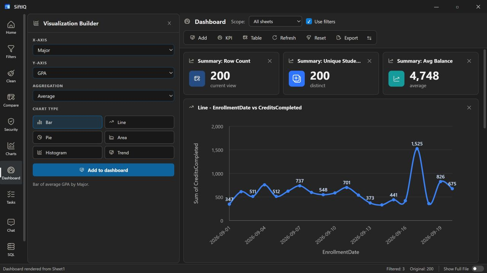

Direct file access
Open Excel and CSV files without building a database or cloud pipeline first.
 SiftIQGet SiftIQ ↗
SiftIQGet SiftIQ ↗The SiftIQ workspace
SiftIQ combines the immediacy of a spreadsheet with the analytical range of SQL, visual builders, dashboards, and AI-assisted exploration.

Questions change as you learn. SiftIQ keeps data, transformations, queries, visuals, and notes in the same workspace so each answer becomes the starting point for the next.
Open Excel and CSV files without building a database or cloud pipeline first.
Move naturally between chat, filters, SQL, charts, and dashboards.
Save the useful work as dashboards, workflows, and exportable results.
Conversational analysis
Use plain language to explore columns, identify patterns, recommend visuals, and turn findings into repeatable work.

Visual workspace
Create focused charts and dashboards without losing the underlying data or analytical context.
